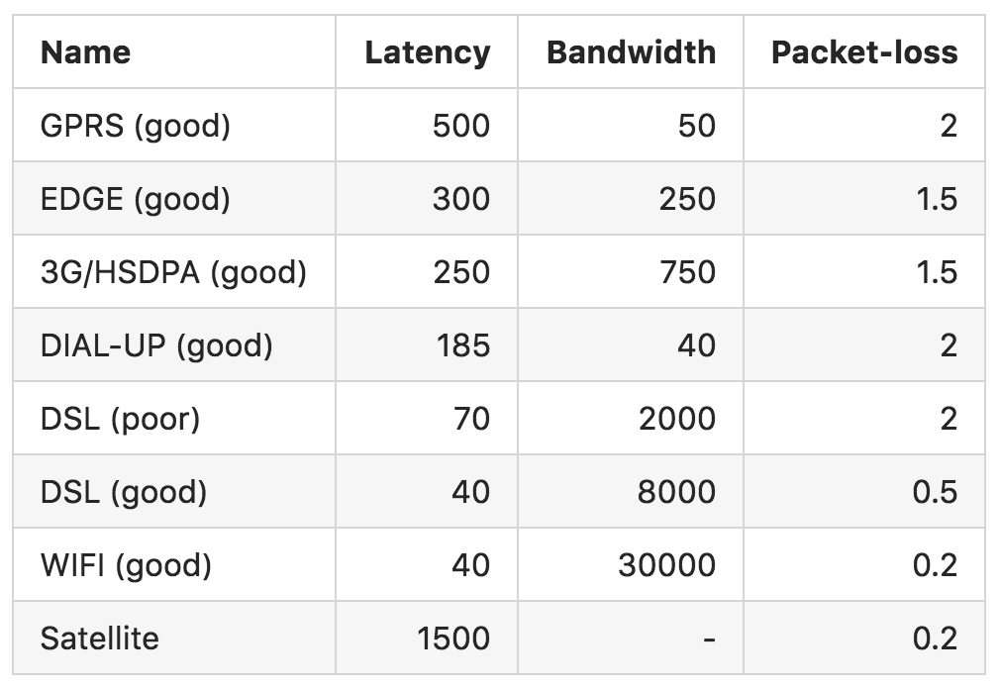

Huang XiaoQing
A kind of tools, which could simulate different network conditions to connect to internet.
Limit use in Windowns OS
Don't check log
On weak network, loading icon always there. Selution: Add timeout response.
On weak network, js loading slowly, some pictures expanse big size for their container. Solution: Add a fixed size for container.
Mostly like as Network link conditioner
Asynchronous with multi devices via AP on the same time
Most difficulte to setup env
Don't install in device, need PC with wireless network card or independent wireless network card
Here's a list of network conditions with values from Comcast
